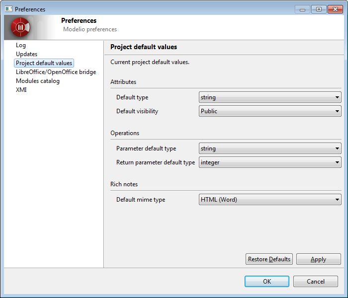
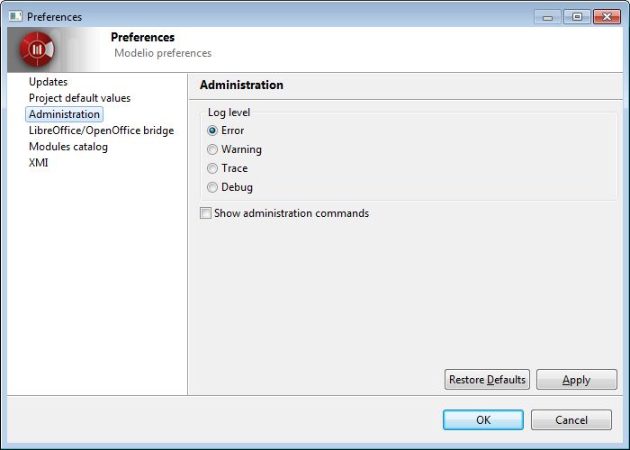
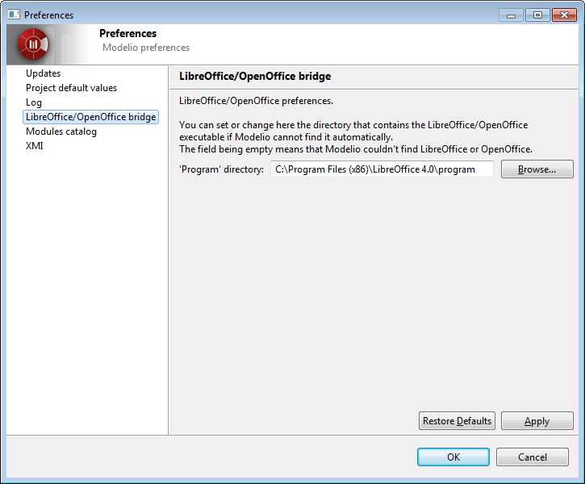
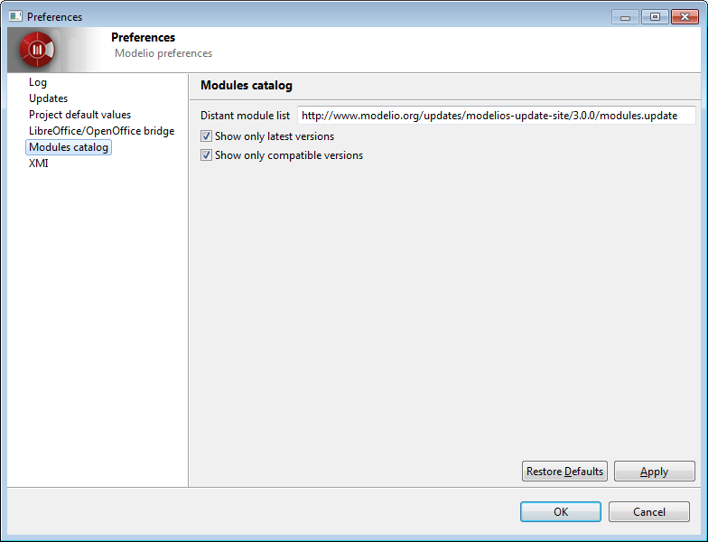
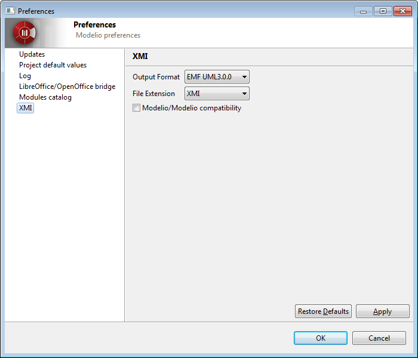

In the Project default values entry of the Preferences dialog, you can define the type
that will be used when you create attributes, parameters and return parameters, as well as the default
visibility of the attributes you create.

In the Administration entry of the Preferences dialog, you can define the log level for Modelio.
By default the log level is set to Error, which only logs errors. This option is recommended
to preserve the application performance and to avoid huge log files to be produced.
Only in case of problems, should the more verbose levels Warning, Trace, Debug be used.
You can also activate some ‘Administration’ commands.

In the LibreOffice/OpenOffice bridge entry of the Preferences dialog, you can define the path to
the LibreOffice or OpenOffice executables directory, in case Modelio cannot find it automatically,
or if you want to use one Office instead of the other.


In the XMI entry of the Preferences dialog, you can define several options for the XMI import/export operations.
